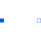

TwoPinComponent with two electrical pins |

|
Information
This information is part of the Modelica Standard Library maintained by the Modelica Association.
TwoPin is a partial model with two pins and one internal variable for the voltage over the two pins. Internal currents are not defined. It is intended to be used in cases where the model which inherits TwoPin is composed by combining other components graphically, not by equations.
Connectors (2)
| p |
Type: PositivePin Description: Positive electrical pin |
|
|---|---|---|
| n |
Type: NegativePin Description: Negative electrical pin |
Extended by (1)
|
Modelica.Electrical.Spice3.Internal Diode model |